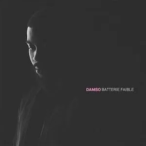
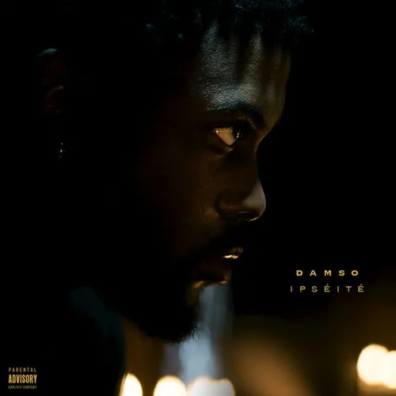
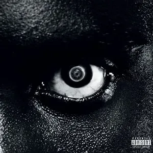
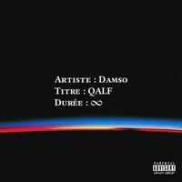

salle d'attente

2014 : Salle d'attente
Premier projet solo du rappeur bruxellois Damso, comportant 8 titres gratuits, téléchargeable et écoutable
2014 : Salle d'attente
Premier projet solo du rappeur bruxellois Damso, comportant 8 titres gratuits, téléchargeable et écoutable

8 juillet 2016 : Batterie faible
Batterie faible est le premier album studio du rappeur belge Damso, sorti le 8 juillet 2016 sous le label Capitol Music France. Ce premier projet de 12 pistes et 2 bonus lui permet de se faire connaitre du public rap et se faire un nom

28 avril 2017 : Ipséité
Ipséité est le deuxième album studio du rappeur belge Damso, sorti le 28 avril 2017 sous les labels 92i, Capitol et Universal. Sorti un an après son premier album Batterie faible qui lui a permis de se faire un nom sur la scène du rap, Ipséité connaît un succès beaucoup plus important en France et en Belgique, permettant à Damso de devenir l'un des rappeurs francophones les plus prometteurs de sa génération.

15 juin 2018: lithopedion
Lithopédion est le troisième album studio du rappeur belge Damso, sorti le 15 juin 2018 sous les labels 92i, Capitol, Universal.
Damso explique au journal Libération avoir choisi ce titre pour son album car « Lithopédion, c’est un mort dans un corps en vie, un fœtus qui atteint la maturité mais qui est mort, qui s’est calcifié avec le temps dans le corps d’une mère et qui n’a jamais été extrait. Pour pouvoir l’extraire, il faut mourir. J’aime cette métaphore parce qu’est actuel pour moi : je me sens mort dans un corps en vie. J’ai l’impression de ne plus vivre les choses comme tout le monde. Je m’endurcis au fond de moi comme un lithopédion »

18 septembre 2020 : Qalf
29 avril 2021 : (Réédition "Infinity")
28 octobre 2023 : (Réédition "LIVE")
QALF est le quatrième album studio du rappeur belge Damso, sorti le 18 septembre 2020, réédité le 29 avril 2021 sous le nom QALF Infinity et le 28 octobre 2023 en QALF LIVE, sous le label Trente-quatre Centimes, label indépendant du rappeur.
L'album, anciennement une mixtape, est pour la première fois annoncée dans l'intro du morceau Une âme pour deux, lorsque le personnage joué par Damso tombe dans le coma : « Je vous garde encore une petite semaine afin d'effectuer quelques analyses en plus. Je vous ai prescrit en attendant la mixtape QALF de Damso et Jackpot du groupe OPG. » Ces paroles se retrouvent dans l'introduction de son album Lithopédion.
2023: beyah en attente
Après avoir obtenu un disque de diamant pour QALF fin août 2023, le rappeur dévoile le 18 septembre via son store, une dernière réédition de son projet, proposant alors 5 nouveaux morceaux déjà édités précédemment, mais sous une version live : YOUVOI, P. DOSE, COEUR EN MIETTES, DEUX TOILES DE MER et T. CHIALER. À quelques heures de la sortie de la seconde réédition, le 27 octobre 2023, l'entièreté de QALF infinity disparaît des plateformes, laissant planer un doute sur l'avenir du projet concernant sa version digitale.
Le 6 novembre 2023, l’album est remis sur les plateformes avec une nouvelle couverture où on peut lire « Bēyāh 2025. Merci de bien vouloir patienter »

Au mois d’août 2023, Damso annonçait une longue pause… à bord de son nouveau camping-car. Après plusieurs années à défendre son dernier album QALF puis sa réédition QALF Infinity, le rappeur émettait le besoin de souffler. Un break qui devrait normalement prendre fin en 2025, d’après un rendez-vous pris avec ses fans par l’artiste lui-même : “On se capte en 2025”. Une date est d’ailleurs déjà fixée par Damso : le 30 mai 2025.
“Je vais mettre ‘Mosaïque solitaire’ et après ça, je pars en camping-car” Damso a conclu son dernier concert en disant les choses clairement : “Je vais terminer sur ça. Je vous souhaite le meilleur dans vos projets. Je vais mettre ‘Mosaïque solitaire’ et après ça, je pars en camping-car. Merci beaucoup et on se capte en 2025”. Qu’est-ce que nous réserve le rappeur pour 2025 ? Un album ou un tout autre projet artistique ? Il va falloir attendre pour en savoir plus. En attendant, laissons Dems prendre un repos bien mérité.